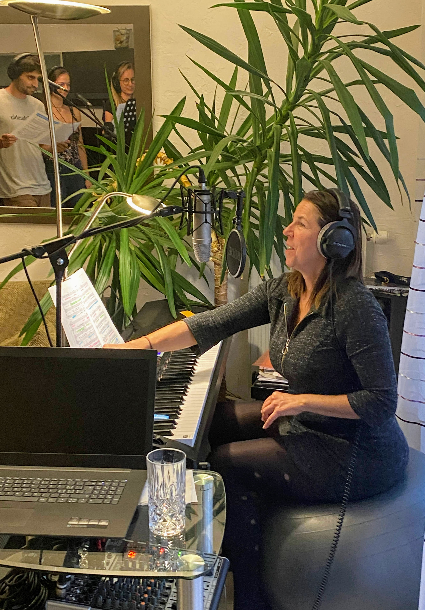
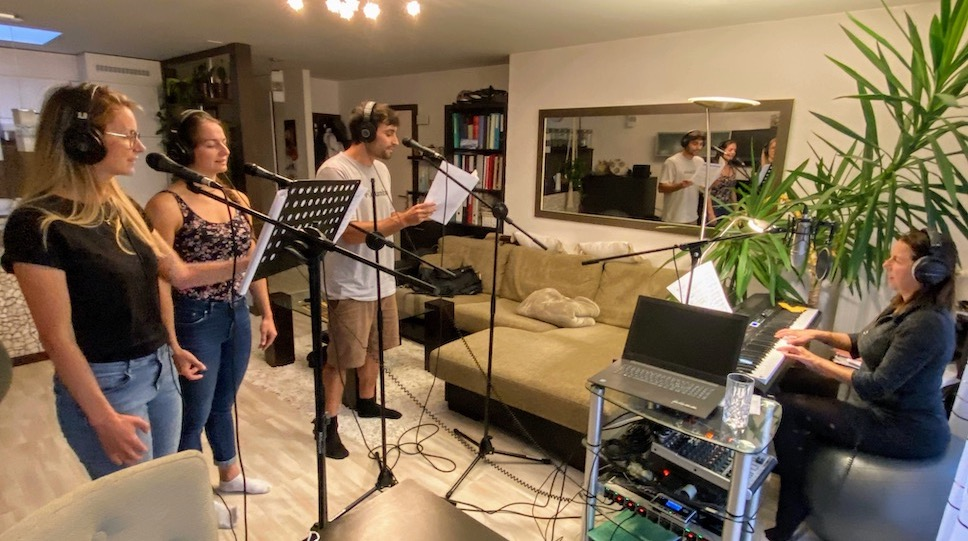

Individual Voice Lessons

Individual lessons for singing enthusiasts who want to learn how to use their voice in a healthy and correct way.
Levels: Beginner, Advanced, Confirmed Artist.
Classes are held in either French or English (which, for some, is a great way to learn or practice a foreign language while singing!)

